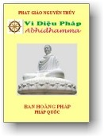

|
BuddhaSasana Home Page |
Vietnamese, with Unicode VU Times or CN-Times font |
|  |
PHẬT GIÁO NGUYÊN THỦY THERAVÀDA VI DIỆU PHÁP BAN HOẰNG PHÁP |
|
Xin lưu ý: Cần có phông UnicodeViệt-Phạn VU Times hay CN-Times cài vào máy để đọc các chữ Pàli. |
|
BÀI 20-a. SẮC PHÁP Sắc Pháp là thể chất vô tri giác, do danh từ Rūpa, có nghĩa là vật chất có tính cách thay đổi và hoại diệt. Theo thuật ngữ Phật học, Sắc Pháp không những dùng để chỉ các phần tử vật chất mà ta có thể nhìn thấy hay cảm nhận được, nó còn hàm chứa tất cả về vật lý ẩn tàng trong phần tử vật chất đó, thí dụ như sự biến đổi lẹ làng khiến ta không thể gõ hai lần lên cùng một chỗ. Sự tồn tại của một Sắc Pháp là 17 tâm Sát na hay 51 Sát na tiểu. Sắc Pháp gồm có 8 đặc tính sau: 1. Pháp Vô Nhân hay Phi Nhân (Ahetuva): vì chúng không có nhân tương ưng như Tham, Sân, Si, Vô Tham, Vô Sân, Vô Si. 2. Pháp Hữu Duyên (Sappaccaya): vì chúng chỉ có sự hiện hữu tương đối, do duyên trợ tạo là Nghiệp (Kamma), Tâm (Citta), Âm Dương hay thời tiết (Utu) và Vật Thực (Āhāra). 3. Pháp Hữu Lậu (Sāsava): vì chúng trở thành đối tượng của dục vọng (tứ lậu). 4. Pháp Hữu Vi (Sankhāra): vì bị chi phối bởi bốn nguyên nhân Kamma, Citta, Utu và Āhāra. 5. Pháp Hợp Thế (Lokīya): vì chúng phụ thuộc vào năm uẩn. 6. Pháp Dục Giới (Kāmavacara): vì chúng nằm trong phạm vi của giới vực Dục lạc (bao gồm cả 28 Sắc Pháp). 7. Pháp Vô Cảnh (Anārammanaṃ): còn gọi là Pháp Phi Sở Duyên, vì không nhận thức được đối tượng, không biết cảnh (làm chỗ nương cho tâm thức biết cảnh). 8.Pháp Phi Trừ (Appahātabba): còn gọi là Pháp Phi Sở Ðoạn, vì các Sắc Pháp không thể tuần tự đoạn diệt như các phiền não. Ở đây không có nghĩa là các Sắc Pháp không bị luật Vô Thường chi phối. Muốn nắm vững căn bản của Sắc Pháp, ta phải nghiên cứu và phân biệt thật kỹ, vì nó vừa thực tế, vừa vi tế, hơn nữa, ta thường có sự nhận định sai lầm giữa Siêu lý và Chế định. Một hạt bụi rất nhỏ mà mắt ta có thể nhìn thấy trong một luồng ánh sáng gọi là Ratharinu. Một Ratharinu có thể phân làm 16 Tājjāris. Một Tājjāris phân làm 16 Anu và một Anu phân ra làm 16 Paramanu. Như vậy, một hạt bụi nhỏ mà ta có thể nhìn thấy được, được bao gồm bởi 4.096 Paramanu. Khi Ðức Phật còn tại thế, Paramanu là một đơn vị vi tếû nhất của phần tử vật chất mà người ta không thể tiếp tục phân tách ra nửa được, như hiện nay, theo các nhà khoa học thì nguyên tử là phần tử nhỏ nhất của vật chất bất khả phân chia, mỗi nguyên tử được cấu tạo bởi électron, proton và neutron. Ngày xưa, với nhãn quang siêu phàm của Ðức Phật, Ngài đã nhìn thấy một Paramanu được cấu tạo bởi bốn nguyên chất gọi là Phatu. Bốn nguyên chất đó là Ðất (Pathavī Phatu), Nước (Āpo Phatu), Lửa (Tejo Phatu) và Gió (Vayo Phatu). Bốn nguyên tố đó luôn luôn xuất hiện trong mọi Sắc Pháp từ nhỏ đến lớn, từ vi trần đến núi cao, không có ngoại lệ. Thí dụ: khi tay ta rờ cục đá, phần ngoài cục đá là Ðất, nóng hay lạnh là Lửa, sự lớn nhỏ, nặng nhẹ là Gió, giúp cho ba yếu tố trên dính lại với nhau tạo ra cục đá là Nước. Một thí dụ khác như nước chẳng hạn, sự nóng hoặc lạnh của nước thuộc về yếu tố Lửa, sự mềm dịu của nước thuộc về yếu tố Ðất, áp lực của nước thuộc về yếu tố Gió, còn yếu tố Nước là sự kết hợp ba yếu tố kia lại với nhau. Ðất (Pathhavī): từ ngữ căn Puth: trương ra, dản ra. Là sự duỗi ra và lan rộng. Ðất là yếu tố nâng đỡ và làm nền tãng để các Sắc Pháp cùng hòa hợp và tồn tại. Không có Ðất thời các vật chất không thể choán chỗ trong không gian. Trạng thái: cứng hoặc mềm (Kukkhalattalakkhanā). Phận sự: duy trì (Patitthanārasā), chính yếu tố Ðất có phận sự choán chỗ hay tạo vị trí, duy trì cho các Sắc đồng sanh. Sự thành tựu: hứng chịu (Sampatachanapaccupaṭṭhānā). Nhân cần thiết: các tam Ðại còn lại (Nước, Lửa và Gió) (Āvasesadhātuttāyapadatthānā). Nước (Āpo): Chơn tướng là chảy ra và quến lại, Ðất còn có thể rờ được nhưng nước là một Sắc vi tế trong vật chất mà chúng ta không thể nào tiếp xúc được bằng năm giác quan. Từ ngữ căn Ap: đến + Pāy: lớn lên, tăng lên. Āpo có nghĩa là lớn lên, trưởng thành, có đặc tính là làm cho các phần tử rời rạc kết hợp lại với nhau và cho ta một ý niệm về hình thể độc nhất. Thí dụ: nhờ chất nước nên mảnh giấy trước mặt chúng ta hiện hữu với hình thể của nó, nếu không có chất nước kết hợp thì mảnh giấy sẽ không thành hình mà trước mắt chúng ta chỉ có những phần tử rời rạc không đồng nhất. Trạng thái: Chảy ra hay kết hợp lại (Paggharanalakkana Ābandhanalakkhanā). Khi một vật chất từ thể đặc biến ra thể lỏng (như kim loại chẳng hạn) thì chất Nước chiếm phần trội hơn ba chất kia. Phận sự: cách tiến hóa, nhờ sự chảy ra và quến lại nên Nước làm cho các chất đồng sanh đượm nhuần, tươi tốt (Bynhanarasā). Sự thành tựu: Siết chặc lại, kết hợp lại (Sangahapaccupaṭṭhānā). Nhân cần thiết: các tam Ðại còn lại (Ðất, Lửa và Gió) (Āvasesadhātuttāyapadatthānā). Lửa (Tejo): Là sự nóng và sự lạnh. Pāli chú giải: Tejeti paripacetìti = Tejo: Làm cho chín gọi là lửa. Lửa là thành phần nóng trong vật chất, lạnh cũng là một hình thức của Lửa, cả hai đều có năng lực làm cho vật chất trở nên linh hoạt và nhu nhuyến, từ ngữ căn Tej: làm cho sắc bén, làm cho thuần thục, Lửa tạo sinh lực cho vật chất, Sắc pháp được tăng trưởng, tồn tại hay hủy hoại đều do yếu tố Lửa gây ra. Trong các yếu tố của Tứ Ðại, chỉ yếu tố Lửa có năng lực làm cho vật chất tự hồi sinh. Lửa ở trong thân có năm nhiệm vụ: Là chất ấm trong thân (Unmātejo). Trạng thái: Cách nóng (Unhattalakkhanā). Phận sự: Làm cho chín (Paripācanarasā). Sự thành tựu: Làm cho ấm áp (Maddavānuppādanapaccupaṭṭhānā). Nhân cần thiết: Các tam Ðại còn lại (Ðất, Nước và Gió) (Āvasesadhātuttāyapadatthānā). Gió (Vayo): Từ ngữ căn Vāy: rung động. Là sự lay động và sự căng ra. Gió là thành phần di động, chính nhờ Gió mà vật chất chuyển động và được xem là năng lực phát sanh hơi nóng, nói khác đi, nhờ Gió mà Lửa di chuyển được khắp châu thân, hay đi khắp mọi nơi. Gió ở trong thân có sáu nhiệm vụ: Là Gió thổi lên (Uddhanagamavāyo). Trạng thái: Lay động hay căng ra (Sanāranalakkhanā và vittham-bhanalakkhanā). Mọi rung động hay mọi áp lực của Sắc Pháp đều do nguyên tố Gió làm chủ động. Phận sự: Làm cho lay động. Gió làm cho các Sắc đồng sanh lay động và đổi chỗ, Gió cũng làm cho các Sắc đồng sanh cứng vững, không lay động như hơi được bơm vào bánh xe (Samu-dīranarasā). Sự thành tựu: Là sự chuyển động, kéo đi. Sự dời chỗ của vật chất thực hiện được là nhờ động năng của Gió (Abhininārapaccu-paṭṭhānā). Nhân cần thiết: Các tam Ðại còn lại (Ðất, Nước và Lửa) (Āvasesadhātuttāyapadatthānā). Bốn chất vừa kể trên gọi là Sắc Tứ Ðại Minh tức là Sắc có chơn tướng rõ rệt, bốn Sắc này cũng là đơn vị căn bản của mọi Sắc Pháp. * * * 24 thứ Sắc còn lại nương nhờ vào Sắc Tứ Ðại mà sinh ra nên được gọi là Sắc Y Sinh (Upādāyarūpa). Sắc Y Sinh được chia làm 10 nhóm: 1) SẮC THẦN KINH (Pasādarūpa) Sắc thần kinh là sự trong ngần, sự nhạy, sự thâu cảnh, là tịnh sắc. Chính nhờ có Sắc Thần Kinh mà lộ ngũ mới có chỗ nương nhờ để sanh ra. Sắc Thần Kinh được chia làm năm loại: 1.1) Thần kinh nhãn (Cakkhupāsada): Là cách trong ngần nương con mắt để thấy được Cảnh Sắc do nhờ Sắc Tứ Ðại mà sinh ra, liên hệ trong thân. Có hai loại: Trí nhãn (Pañcacakkhu), nhục nhãn (Mansacakkhu). Trí Nhãn (Pañcacakkhu): được chia làm năm loại: a) Phật nhãn: Tuệ biết tánh nết chúng sanh. b) Toàn tri nhãn: còn gọi là Nhất Thiết Chủng Trí tức là trí hiểu biết của chư Phật. c) Huệ nhãn: Là Sở Hữu Trí, hợp với tâm Tứ Ðạo. d) Pháp nhãn: Là Sở Hữu Trí hợp với tâm Ðạo của bậc thiền học. e) Thiên nhãn: Tức nhãn thông. Nhục Nhãn (Mansacakkhu): được chia làm hai loại: a) Thần kinh nhãn (Pasādacakkha): còn gọi là tinh Sắc hay phần chính giữa con ngươi trong bảy lớp mạc ở giữa tròng đen. Chính nhờ Thần Kinh nhãn mà con mắt có thể thấy được. Còn được gọi là Nhãn Quyền, Nhãn Căn hay Nhãn Môn. b) Nhãn Hiện tượng: là tất cả các bộ phận của con mắt. Trạng thái: Sự trong ngần hay sự nhạy của mắt khi tiếp xúc với cảnh sắc (Rūpabhigātārahabhutappasādalakkhanaṃ). Phận sự: Tìm kiếm cảnh sắc (Rūpasu Āviñchanarasaṃ). Sự thành tựu: Chỗ nương của nhãn thức (Cakkhuviññānassa adhārabhavapaccupaṭṭhānaṃ). Nhân cần thiết: Có Sắc Tứ Ðại sanh từ tham ái chấp trước (Datthuthāmatānidānakammakhabhutapadattānaṃ). 1.2) Thần Kinh Nhĩ, 1.5) Thần kinh thân: Là tất cả bộ phận thân thể chúng sanh. Thần kinh thân hay sự nhạy của thân hay tịnh sắc. Ðược phân làm hai loại: Thân bản thể tức là thần kinh nương thân (Pasādakayam); Thân Căn. Thân cụ thể tức là thân hay các bộ phận thân thể. Trạng thái: Sự trong ngần của Sắc Tứ Ðại khi thâu cảnh xúc (Photthabbābhighatārahabhutappasādalakkhanaṃ). Phận sự: Soi chiếu đến cảnh xúc (Photthabbesu Āviñchanarasaṃ). Sự thành tựu: Chỗ nương của Thân thức (Kāyaviññānassa ādhārabhāvapadatthānaṃ). Nhân cần thiết: Có cảnh xúc (Busitukamatānidānakamma-jabhūtapadattānaṃ). 2. SẮC CẢNH GIỚI (Gocararūpa) Sắc Cảnh Giới là đối tượng của các căn, gồm có: 2.1) Cảnh Sắc (Rūparammana): Gồm các tướng trạng và màu sắc, tức các đối tượng mà mắt có thể nhận thức được khi chúng xuất hiện. Cảnh Sắc là Sắc bị thấy hay Sắc mà Nhãn Thức biết được. Nơi tiến hành của Nhãn Thức gọi là (cảnh) Sắc. Trạng thái: Ðối chiếu với thần kinh nhãn là các hiện tượng, các vật có hình thức, tức là Sắc bị thấy (Cakkhapatihananalakkhānaṃ). Phận sự: Làm cảnh cho Nhãn Thức. Chỉ có Nhãn Thức mới biết được Cảnh Sắc (Cakkhuviññāṇassuvisayabhārasataṃ). Thành tựu: Làm vật thực cho Nhãn Thức (Tassevagocarapaccupaṭṭhānaṃ). Nhân cần thiết: Có Sắc Tứ Ðại Minh (Catucahābhūtapadatthānaṃ). 2.2) Cảnh Thinh (Saddhārammane): Gồm các loại âm thanh như tiếng nói, tiếng gió, tiến trống, tiếng kèn, tiếng mỏ, tiếng nhạc, ... Cảnh Thinh là loại Sắc bị nghe hay là loại Sắc mà Nhĩ Thức nhận biết. Trạng thái: Ðối chiếu với thần kinh nhĩ là Sắc bị nghe (Sotapati-hananalakkhānaṃ). Phận sự: Làm cảnh cho Nhĩ Thức. (Sotaviññāṇassuvisayabhāvacasaṃ). Thành tựu: Làm vật thực cho Nhĩ Thức (Tassevogarapaccupaṭṭhānaṃ). Nhân cần thiết: Có Sắc Tứ Ðại Minh (Catucahābhūtapadatthānaṃ). 2.3) Cảnh Khí (Gandhāramanā): Là các thứ hơi, mùi, như hơi thơm, thúi, ... Là loại Sắc mà Tỷ Thức biết. Nơi tiến hóa của Tỷ Thức gọi là cảnh khí. Trạng thái: Ðối chiếu với thần kinh Tỷ là Sắc bị Tỷ Thức biết (Ghānapati-hananalakkhānaṃ). Phận sự: Làm cảnh cho Tỷ Thức. (Ghānaviññāṇassuvisayabhāvacasaṃ). Thành tựu: Làm vật thực cho Tỷ Thức (Tasseragocurapaccupaṭṭhānaṃ). Nhân cần thiết: Có Sắc Tứ Ðại Minh (Catucahābhūtapadatthānaṃ). 2.4) Cảnh vị (Rasānammana): Là các vị chua, cay, mặn, lạc, ... hay các chất bị nếm. Sắc mà Thiệt Thức nếm gọi là vị. Trạng thái: Ðối chiếu với thần kinh thiệt là Sắc bị nếm (Jvihāpati-hananalakkhānaṃ). Phận sự: Làm cảnh cho Thiệt Thức. (Jvihāviññāṇassuvisayabhāvacasaṃ). Thành tựu: Làm vật thực cho Thiệt Thức (Tassevagocarapaccupaṭṭhānaṃ). Nhân cần thiết: Có Sắc Tứ Ðại Minh (Catucahābhūtapadatthānaṃ). 2.5) Cảnh xúc (Photthabbānammana): Là cứng, mềm, dùn, thẳng, nóng, lạnh, tức Ðất, Lửa, Gió trừ Nước vì Nước quá tế nhị nên Xúc không thể cảm giác được. 3. SẮC TRẠNG THÁI (Bhāvarūpa) Sắc Trạng Thái còn gọi là Sắc Tính, là tư cách, khuôn khổ, hiện tượng, nhất là Căn ... của nam, nữ. Ðược chia làm hai loại: 3.1) Sắc Trạng Thái Nữ (Itthibhāvarūpa): hay Nữ tính tức là những cách thức thuộc về phần nữ như nữ căn, nữ tướng, thân phần nữ, thái độ nữ, nết na nữ, hành động theo cách người nữ. Trạng thái: Những biểu hiện theo khuôn khổ người nữ (Itthibhāva-lakkhānaṃ). Phận sự: Trình bày ra người nữ (Itthitipakāsanarasaṃ). Thành tựu: Có nữ căn (Itthilingādīnam karanabhāvapaccupaṭṭhānaṃ). Nhân cần thiết: Có Sắc Tứ Ðại Minh (Catucahābhūtapadatthānaṃ). 3.2) Sắc Trạng Thái Nam (Purisabhāvarūpa): hay Nam tính tức những trạng thái thuộc về phần nam như nam căn, nam tướng, thân phần nam, thái độ nam, nết hạnh nam, hành động theo cách người nam. Trạng thái: Những biểu hiện theo khuôn khổ người nam (Purisabhāva-lakkhānaṃ). Phận sự: Trình bày ra cách người nam (Purisotipakāsunarasaṃ). Thành tựu: Có nam căn (Purisalingādīnamkāranabhāvapaccupaṭṭhānaṃ). Nhân cần thiết: Có Sắc Tứ Ðại Minh (Catumahābhūtapadatthānaṃ). Sắc trạng thái nam và nữ khác nhau có bốn cách: Căn : Nam căn và nữ căn. 4. SẮC Ý VẬT (Hadayavatthu) Sắc Ý Vật là cứ điểm của tâm thức. Tập Dhammasanganī không nói đến Sắc Pháp này. Tập Atthasālinī, Hadayavatthu được giải thích là cứ điểm của tâm thức (Cittassa vatthu). Trong kinh điển, ta không thấy Ðức Phật xác định cứ điểm của tâm thức nằm tại chỗ nào trong cơ thể; nhưng trong thời Ngài còn tại thế, theo truyền thống Upanishad, thì quả tim là cứ điểm của tâm thức; theo các vị sớ giải như Ngài Buddhaghosa và Anuruddha, thì cứ điểm của tâm thức cũng là trái tim. Vì vậy, ta có thể nói Sắc Ý Vật là Sắc tim, là bản chất của tim. Ðược chia làm hai phần: 4.1) Nhục đoàn tim (Mansahadayarūpa) là trái tim, có hình dáng tương tợ như bông sen còn búp. 4.2) Bản sắc tim (Vatthuhayarūpa) là một thứ Sắc Nghiệp, nương sanh nơi Nhục đoàn tâm. Trong tập Paṭṭhāna, Ðức Phật nói đến cứ điểm của tâm thức một cách rất tổng quát như sau: Yamrūpanissaya (Y cứ trên Sắc Pháp này). Trạng thái: Chỗ nương của Ý Giới và Ý Thức Giới (Manodhātumano-viññāṇadhātunaṃ Nissayalakkhānaṃ). Phận sự: Hứng chịu những Giới. (Tāsaññevadhātunaṃ Adhāranarasaṃ). Thành tựu: Bảo vệ những Giới (Tadubbahanapaccupaṭṭhānaṃ). Nhân cần thiết: Có Sắc Tứ Ðại Minh (Catucahābhūtapadatthānaṃ). 5. SẮC MẠNG QUYỀN (Jīvitindriyarūpa) Gọi là Sắc Mạng vì nó bảo vệ sự tồn tại các Sắc Pháp đồng sanh, có phận sự gìn giữ Sắc Nghiệp, bảo vệ cho thân không hư hoại. Sắc Mạng Quyền đồng sanh với tâm Tục Sinh và chấm dứt cùng lúc với tâm Tử. Trạng thái: Bảo vệ các Sắc đồng sanh (Sahajātarāpapanupālakkhānaṃ). Phận sự: Gìn giữ sự tồn tại của Sắc Nghiệp (Tesampavattanarasaṃ). Thành tựu: Sự phối hợp các Sắc Pháp đồng sanh với nhau cho bền vững (Tesaññevathapanapaccupaṭṭhānaṃ). Nhân cần thiết: Có Sắc Tứ Ðại điều hòa (Yāpayitabbapadatthānaṃ). 6. SẮC VẬT THỰC (Āhararūpa) Gồm bốn loại: - Ðoàn thực (Kabalikarāhāra): là thức ăn, ám chỉ chất bổ của miếng ăn. - Xúc Thực (Phassāhāra) - Tư Thực (Manosañcetāahāra): thuộc Danh Pháp Hữu Vi. - Thức Thực (Viññāhāra) Sắc Vật Thực thuộc Ðoàn Thực. Vật Thực có hai: - Vật thực ngoại (Bahiddhāhāra): là những chất bổ từ bên ngoài đưa vào nuôi cơ thể như miếng ăn, thuốc uống, ... - Vật thực nội (Ojāñattāhāra): là sự tự dinh dưỡng của mỗi bọn Sắc. Vật thực nội được vật thực ngoại giúp đỡ mới tạo ra các Sắc Pháp. Các Sắc Pháp dần dần khởi lên khi vật thực được luân chuyển khắp cơ thể. Trạng thái: Giúp cho thân được tăng trưởng (Ojalakkhānaṃ). Phận sự: Gìn giữ sự tồn tại của Sắc Pháp (Rūpahāranarasaṃ). Thành tựu: Trợ giúp cho thân thể (Kāyupatthambhanapaccupaṭṭhānaṃ). Nhân cần thiết: Thực phẫm thích hợp nên dùng (Ojāoharitabbapadat-thānaṃ). 7. SẮC HƯ KHÔNG (Ākāsarūpa) Sắc Hư Không hay Hư Không Giới (Ākāsadhātu) là khoảng trống (hư không) phân chia các bọn Sắc Pháp với nhau, là kẽ hở hay ranh giới giữa các bọn Sắc Pháp nên còn gọi là Hạn Giới Sắc (Paricchedarūpa). Theo Abhidhamma, Hư Không cũng là một Sắc Pháp được cấu tạo bởi bốn Pháp: Nghiệp (Kamma), Tâm (Citta), Âm Dương (Thời tiết, Utu) và Vật Thực (món ăn, Āhārā). Hư Không được phân ra làm bốn loại: - Hữu hư không (Ajtākasa): Là hư không của vũ trụ, là không gian, bầu trời. - Không gian hư không (Paricchinnākāsa): Là khoảng trốâng giữa hai vật thể. - Tuyệt tịnh hư không (Kasiñugghātimakāsa): Là hư không phủ nhận 9 đề mục (ám chỉ đề mục Không Vô Biên). - Giao giới hư không (Paricchedākāsa): Là ranh giới của hai bọn Sắc Pháp. Trạng thái: Khoảng trống phân chia các bọn Sắc Pháp (Rūpapariccheda-lakkhānaṃ). Phận sự: Trình bày riêng từ phần của bọn Sắc Pháp (Rūpapariyantappakāsa-narasaṃ). Thành tựu: Phân cách các Sắc Pháp (Rūpamariyādapaccupaṭṭhānaṃ). Nhân cần thiết: Có ranh giới của các bọn Sắc (Paricchinnarūpapadatthānaṃ). 8. SẮC BIỂU TRI (Viññattirūpa) Là trạng thái của tâm thức được biểu lộ qua hành động, nét mặt, ngôn ngữ. Sắc Biểu Tri có hai thứ: 8.1) Sắc Thân Biểu Tri (Kāyaviññattirūpa): Là thân hành động, có hai loại: - Thân tiêu biểu thông tri: là Sắc hiện trên thân nêu bày cho người khác biết ý nghĩa hay tâm trạng, như khi đang giận thì mặt đỏ lên. - Thân tiêu biểu hành vi: Là trạng thái thân lúc hoạt động hay làm việc, nó không nhằm truyền đạt một thông điệp nào, đây không phải là chơn tướng của Thân Biểu Tri. Khi nói đến Thân Biểu Tri, ta phải hiểu đó là Thân tiêu biểu thông tri. Trạng thái: Làm người khác hiểu ý qua thân hành động (Viññāpana-lakkhānaṃ). Phận sự: Trình bày ý nghĩa, tâm trạng (Adhippāyapakāsanasasaṃ). Thành tựu: Cách thân lay động (Kāyavipphandanahetubhāvapaccupaṭṭhānaṃ). Nhân cần thiết: Có Gió do Sắc Tâm tạo (yếu tố Gió cần thiết cho mọi hoạt động) (Cittasamutthānavayodhātupadatthānaṃ). 8.2) Sắc Khẩu Biểu Tri (Vacīviññattirūpa): Là cách phát ra bằng miệng, có hai loại - Khẩu tiêu biểu thông tri: là miệng phát ra nêu bày cho người khác biết ý nghĩa hay tâm trạng, như kêu nhau, nói chuyện. - Khẩu tiêu biểu hành vi: Miệng hành động nhưng không nhằm nêu bày để tỏ hiểu với nhau, đây không phải là chơn tướng của Khẩu Biểu Tri. Khi nói đến Khẩu Biểu Tri, ta phải hiểu đó là Khẩu tiêu biểu thông tri. Trạng thái: Làm người khác hiểu ý qua lời nói (hành động của Khẩu) (Viññāpanalakkhānaṃ). Phận sự: Trình bày ý nghĩa, tâm trạng (Adhippāyapakāvaranaṃ). Thành tựu: Miệng nói năng (Vacighosahetubhāvapaccupaṭṭhānaṃ). Nhân cần thiết: Có Ðất do Sắc Tâm tạo (Cittasamutthānapathavidhātu-padatthānaṃ). 9. SẮC ÐẶC BIỆT (Vikārarūpa) Sắc Ðặc biệt là những Sắc có tính cách thù thắng đễ sử dụng. Ðược phân làm ba loại: 9.1) Sắc Khinh (Rūpalahutā): Là trạng thái nhẹ nhàng, linh hoạt của Sắc Pháp, có phận sự phá trừ tính cách nặng nề của Sắc. Trạng thái: Sự nhẹ nhàng (Adandhatālakkhanā). Phận sự: Trừ cách nặng nề của Sắc (Rūpanamgarubhāvinodanarasā). Thành tựu: Làm việc một cách nhẹ nhàng (Sahuparivattitāpaccupaṭṭhānā). Nhân cần thiết: Có Sắc nhẹ (Sahurūpapadatthānā). 9.2) Sắc Nhu (Mudutārūpa): Là sự nhu nhuyến của Sắc Tâm, Âm Dương và Vật thực nội, là trạng thái uyển chuyển trong việc làm, có phận sự bài trừ cách sượng cứng của Sắc. Trạng thái: Sự mềm mại (Athaddhatālakkhanā). Phận sự: Trừ cách sượng cứng của Sắc (Rūpanamtaddhavinodananasā). Thành tựu: Không trở ngại trong công việc làm (Sabbākriyāsu Avinodhi-tāpaṭṭhānā). Nhân cần thiết: Có Sắc mềm (Mudurūpapadatthānā). 9.3) Sắc Thích Nghiệp (Rūpakammaññatā): Là sự thích ứng, thích hợp với cảnh để giải quyết công việc như ý, lúc nào cũng hợp với công việc, như muốn đưa, giở, nâng cách nào cũng được, cao thấp đúng theo ý sắp đặt. Trạng thái: Cách thích nghi (sự thích hợp). Phận sự: Trừ cách không thích ứng (bài trừ cách không thích nghi). Thành tựu: Cách lưu tồn lực lượng. Nhân cần thiết: Có Sắc Thích Nghiệp. 10. SẮC TỨ TƯỚNG (Lakkhanarūpa) Sắc Tứ Tướng là tướng trạng của Sắc Pháp trong chu trình tiến hóa, hay sự thay đổi của Sắc pháp theo yếu tố thời gian. Ðược phân làm bốn loại: 10.1) Sắc Sinh (Upacaya): Là cách phát sanh ra Sắc (từ chỗ không trở thành có gọi là sinh). Chúng là trạng thái sơ sanh và được xem là sự sanh khởi đầu tiên của các bọn Sắc. Sự sanh tiếp nối của các bọn Sắc đó cho đến khi mạng chung được kể là giai đoạn Sắc Tiến (Santati). Cả hai giai đoạn Upacaya và Santati còn được gọi chung là jāti (sanh). Vì thế, tổng số Sắc Pháp chỉ còn có 27 Sắc. Trạng thái: Sơ sanh (Ācayalakkhanā). Phận sự: Làm công tác sanh những bọn Sắc (Rūpanamummujjāpanaraso). Thành tựu: Sự đầy đủ của Sắc Pháp (Paripuññabhāvapaccupaṭṭhāno). Nhân cần thiết: Có Sắc đồng sanh (Uparitarūpapadatthāno). 10.2) Sắc Tiến (Santati): là cách tiến hóa, tăng trưởng của Sắc pháp, trong giây phút đầu tiên của mỗi Sắc pháp thì Upacaya và Santati đồng lúc xuất hiện trong một sát na tiểu; sau đó, khi Sắc pháp phát triển thì chỉ có Santati hiện hữu mà thôi. Trạng thái: Cách tiến hóa của Sắc Pháp (Parattilakkhanā). Phận sự: Làm cho sự tiến hóa được liên tục (Anuppabandhanarasā). Thành tựu: Cách không đứt đoạn nhau (Anupacehedapaccupaṭṭhāna). Nhân cần thiết: Có Sắc nối nhau (Anuppabandhakasurūpapadatthāna). 10.3) Sắc Dị (Jaratā): Là cách già, tàn lụn. Là sự tiêu mòn, thoái hóa của Sắc Pháp (Sắc Tiến và Sắc Dị còn được gọi chung là Sắc Trụ; Sắc Trụ tồn tại trong 49 sát na tiểu). Trạng thái: Cách hao mòn của Sắc Pháp (Rūpaparipālakkhanā). Phận sự: dẫn dắt cách hao mòn (Upanayanarasā). Thành tựu: Vượt qua giai đoạn sơ sanh (Navabhāvapagamanapaccupaṭṭhāna). Nhân cần thiết: Có Sắc tiêu mòn (Paripaccunānarūpapadatthāna). Giai đoạn Santati và Jaratā được xem là giai đoạn ṭhiti (Trụ) của Sắc. 10.4) Sắc Diệt (Aniccatā): hay Tánh Vô Thường của Sắc Pháp. Ðây là giai đoạn Sắc bị hủy hoại hay bị diệt (bhaṅga). Từ chỗ có trở thành không gọi là diệt. Trạng thái: Cách hư hao, làm cho mất (Paribhidalakkhanā). Phận sự: Chìm lặng xuống (Samsidanarasā). Thành tựu: Cách tiêu hoại (Khayarayapaccupaṭṭhāna). Nhân cần thiết: Có Sắc đang hoại mất (Paribhijjamānarūpapadatthāna). Ngoại trừ 5 Sắc Pháp là: 2 Sắc Biểu Tri (Viññattirūpa), Sanh (Jāti), Dị (Jaratā) và Diệt (Aniccatā), 23 Sắc Pháp còn lại có tuổi thọ là 17 tâm sát na, tâm sát na đầu là Upacaya, tâm sát na cuối là Aniccatā và 15 tâm sát na ở giữa là Jaratā. * * * 10 Sắc Pháp, từ Sắc Hư Không (Akāsarūpa) đến Sắc Vô Thường (Aniccatā) được gọi là Aniphannā = Sắc Phi Thành Tựu (Phi Sở Tạo Sắc, Bất Hoàn Sắc) hay Sắc Không Rõ. (xem tiếp phần 20-b) -ooOoo-
Ðầu trang |
Mục lục
| 01
| 02
| 03
| 04
| 05
| 06
| 07
| 08
| 09 |
Chân thành cám ơn Bác sĩ Nguyễn Tối Thiện đã gửi tặng bản vi tính (Bình Anson, 10-2002).
[Trở
về trang Thư Mục]
updated: 24-08-2003